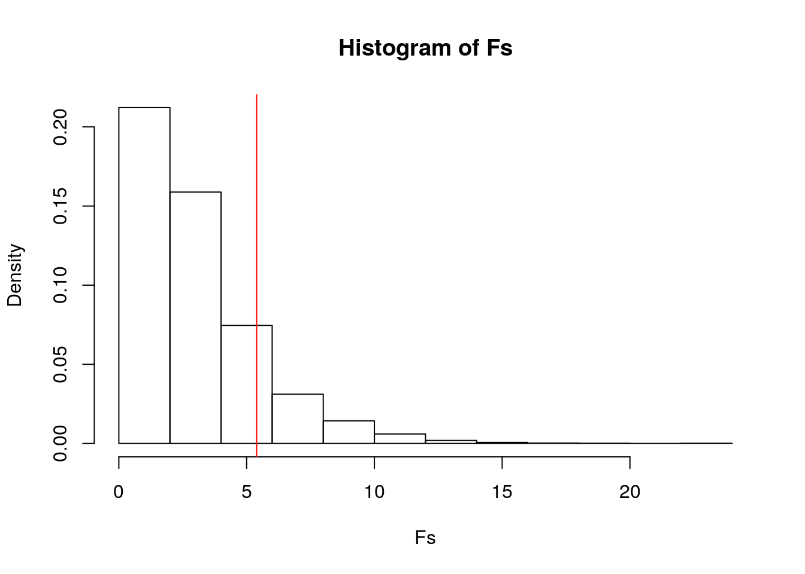
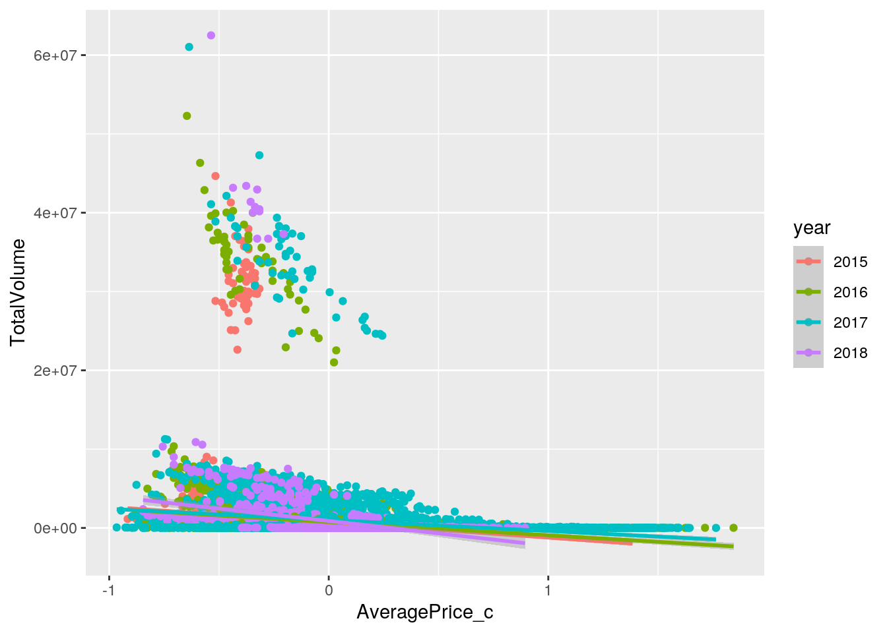
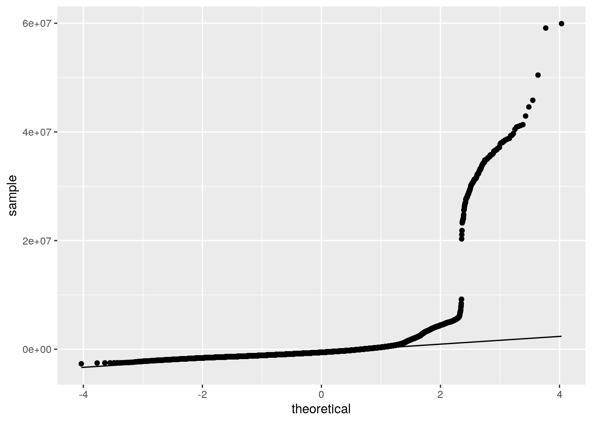
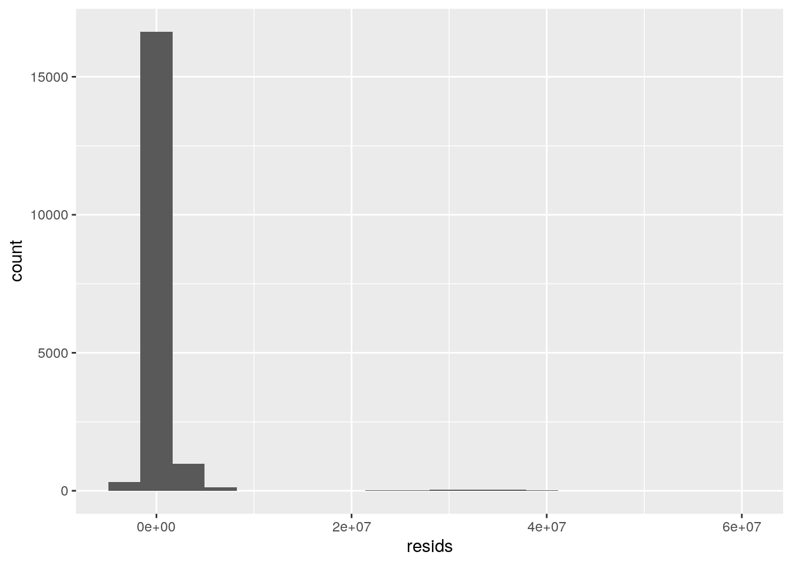
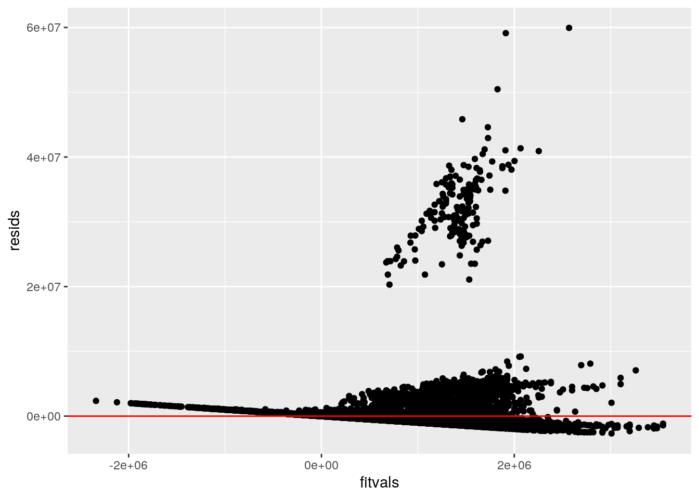
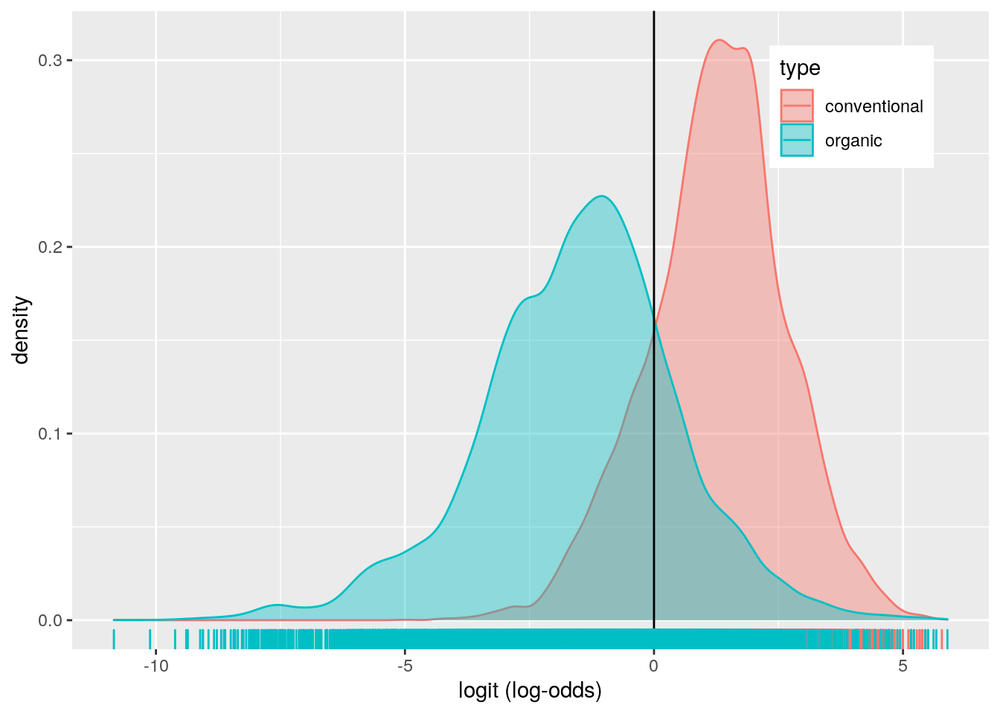
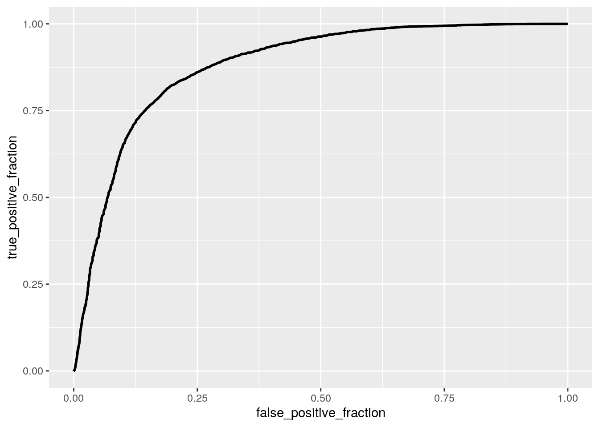

My project involves conducting statistical tests in Hass avocado sales between 2015-2018 to uncover any statistical significance among the variables in the dataset. This was done by analyzing relationships between these variables. The avocado dataset contains 18249 observations and 14 variables. The main numeric variables I looked at were average price of a single avocado, the total volume (number) of avocados sold, how many avocados sold were PLU 4046, PLU 4225, and PLU 4770, the total number of bags sold, the total number of small bags sold, the total number of large bags sold, and the total number of extra large bags sold. The categorical variables I looked at were the type of avocado that was sold (conventional vs. organic), year, and region. Avocados have been becoming more popular (i.e., avocado toast), and I chose to study this dataset because I was interested to see if avocado sales were increasing over time. I expected that the average price of an avocado and the amount of avocados sold depended on the year and type. I determined the statistical significance of these factors in this project.
avocado <- read.csv("avocado.csv")
man1 <- manova(cbind(AveragePrice, TotalVolume, TotalBags)~type, data=avocado)
summary(man1)## Df Pillai approx F num Df den Df Pr(>F)
## type 1 0.39271 3932.8 3 18245 < 2.2e-16 ***
## Residuals 18247
## ---
## Signif. codes: 0 '***' 0.001 '**' 0.01 '*' 0.05 '.' 0.1 ' ' 1summary.aov(man1)## Response AveragePrice :
## Df Sum Sq Mean Sq F value Pr(>F)
## type 1 1122.2 1122.2 11149 < 2.2e-16 ***
## Residuals 18247 1836.7 0.1
## ---
## Signif. codes: 0 '***' 0.001 '**' 0.01 '*' 0.05 '.' 0.1 ' ' 1
##
## Response TotalVolume :
## Df Sum Sq Mean Sq F value Pr(>F)
## type 1 1.1758e+16 1.1758e+16 1042.1 < 2.2e-16 ***
## Residuals 18247 2.0589e+17 1.1283e+13
## ---
## Signif. codes: 0 '***' 0.001 '**' 0.01 '*' 0.05 '.' 0.1 ' ' 1
##
## Response TotalBags :
## Df Sum Sq Mean Sq F value Pr(>F)
## type 1 8.4188e+14 8.4188e+14 908.58 < 2.2e-16 ***
## Residuals 18247 1.6907e+16 9.2659e+11
## ---
## Signif. codes: 0 '***' 0.001 '**' 0.01 '*' 0.05 '.' 0.1 ' ' 1pairwise.t.test(avocado$AveragePrice, avocado$type, p.adj = "none")##
## Pairwise comparisons using t tests with pooled SD
##
## data: avocado$AveragePrice and avocado$type
##
## conventional
## organic <2e-16
##
## P value adjustment method: nonepairwise.t.test(avocado$TotalVolume, avocado$type, p.adj = "none")##
## Pairwise comparisons using t tests with pooled SD
##
## data: avocado$TotalVolume and avocado$type
##
## conventional
## organic <2e-16
##
## P value adjustment method: nonepairwise.t.test(avocado$TotalBags, avocado$type, p.adj = "none")##
## Pairwise comparisons using t tests with pooled SD
##
## data: avocado$TotalBags and avocado$type
##
## conventional
## organic <2e-16
##
## P value adjustment method: nonealpha = 0.05/7
alpha## [1] 0.007142857library(rstatix)##
## Attaching package: 'rstatix'## The following object is masked from 'package:stats':
##
## filtergroup <- avocado$type
DVs <- avocado %>% select(AveragePrice, TotalVolume, TotalBags)
box_m(DVs, group)## # A tibble: 1 x 4
## statistic p.value parameter method
## <dbl> <dbl> <dbl> <chr>
## 1 90799. 0 6 Box's M-test for Homogeneity of Covariance Matric…In total, I performed 7 tests (1 MANOVA, 3 ANOVA, 3 t tests) and the probability of at least one type 1 error if un-adjusted is 0.05. With the bonferroni correction, the new significance level is 0.0071. First, I conducted a one-way MANOVA test to determine if the average avocado price, total volume (number of avocados) sold, and total numbers of bags sold show a mean difference across avocado type. Significant differences were found among the two different avocado types for at least one of these dependent variables, Pillai trace = 0.393, pseudo F(1, 18245) = 3932.8, p < 0.001. Then, I conducted univariate ANOVA tests on each of the dependent variables, using the Bonferroni method for controlling Type I error rates for multiple comparisons, to find the response(s) showing a mean difference across the two avocado types. I found a significant mean difference across avocado type for all three dependent variables i.e., F(1, 18247) = 11149, p < 0.001 for avocado price, F(1, 18247) = 1042.1, p < 0.001 for total volume sold, F(1, 18247) = 908.58, p < 0.001 for total number of bags sold. For the post-hoc t tests, I found that both the conventional and organic avocados differed significantly in terms of average price, total number of bags sold and total volume sold, when using the un-adjusted significance level. After adjusting for multiple comparisons, I still found that both avocado types differed in average price, total number of bags sold and total volume sold (alpha = 0.05/7 = 0.0071).
MANOVA assumes random samples/independent observations which appears to be met here. MANOVA also assumes that there is homogeneity of within-group covariance matrices. After conducting Box’s M test, p < 0.05, I reject the null hypothesis that there is homogeneity. This shows that the homogeneity assumption is violated for the MANOVA test, which may make the test less accurate.
library(dplyr)
avocado$year <- as.factor(avocado$year)
summary(aov(TotalVolume~year,data=avocado))## Df Sum Sq Mean Sq F value Pr(>F)
## year 3 8.896e+13 2.965e+13 2.487 0.0586 .
## Residuals 18245 2.176e+17 1.192e+13
## ---
## Signif. codes: 0 '***' 0.001 '**' 0.01 '*' 0.05 '.' 0.1 ' ' 1pairwise.t.test(avocado$TotalVolume, avocado$year, p.adj = "none")##
## Pairwise comparisons using t tests with pooled SD
##
## data: avocado$TotalVolume and avocado$year
##
## 2015 2016 2017
## 2016 0.2350 - -
## 2017 0.2100 0.9518 -
## 2018 0.0072 0.0501 0.0541
##
## P value adjustment method: noneobs_F <- 5.395
Fs <- replicate(5000,{
new <- avocado%>%mutate(TotalVolume=sample(TotalVolume))
SSW <- new %>% group_by(year) %>% summarize(SSW=sum((TotalVolume-mean(TotalVolume))^2)) %>%
summarize(sum(SSW)) %>% pull
SSB <- new %>% mutate(mean=mean(TotalVolume)) %>% group_by(year) %>%
mutate(groupmean=mean(TotalVolume)) %>% summarize(SSB=sum((mean-groupmean)^2)) %>%
summarize(sum(SSB))%>%pull
(SSB/1)/(SSW/18247)
})
hist(Fs, prob=T); abline(v = obs_F, col="red", add=T)
mean(Fs>obs_F)## [1] 0.1444Null hypothesis: The mean total volume sold is the same for each year (2015, 2016, 2017, 2018) of avocado sales.
Alternative Hypothesis: At least one of the sample means for the different years of avocado sales is not equal to the others.
I got a p-value of 0.144, and therefore I fail to reject the null hypothesis. I conclude that there is no significant difference in the mean total volume of avocados sold between 2015, 2016, 2017 and 2018.
library(ggplot2)
avocado$year <- as.factor(avocado$year)
avocado$AveragePrice_c <- avocado$AveragePrice - mean(avocado$AveragePrice, na.rm=T)
avo_fit <- lm(TotalVolume ~ AveragePrice_c*year, data=avocado)
summary(avo_fit)##
## Call:
## lm(formula = TotalVolume ~ AveragePrice_c * year, data = avocado)
##
## Residuals:
## Min 1Q Median 3Q Max
## -2675338 -961045 -570293 -1739 59937136
##
## Coefficients:
## Estimate Std. Error t value Pr(>|t|)
## (Intercept) 721778 45297 15.934 < 2e-16 ***
## AveragePrice_c -1949759 120218 -16.219 < 2e-16 ***
## year2016 24005 64416 0.373 0.709408
## year2017 294320 64647 4.553 5.33e-06 ***
## year2018 161363 105859 1.524 0.127447
## AveragePrice_c:year2016 277064 166141 1.668 0.095404 .
## AveragePrice_c:year2017 541054 158517 3.413 0.000643 ***
## AveragePrice_c:year2018 -1194714 330048 -3.620 0.000296 ***
## ---
## Signif. codes: 0 '***' 0.001 '**' 0.01 '*' 0.05 '.' 0.1 ' ' 1
##
## Residual standard error: 3383000 on 18241 degrees of freedom
## Multiple R-squared: 0.04071, Adjusted R-squared: 0.04034
## F-statistic: 110.6 on 7 and 18241 DF, p-value: < 2.2e-16new_avo <- avocado %>% filter(!is.na(year), !is.na(TotalVolume), !is.na(AveragePrice_c))
ggplot(new_avo, aes(AveragePrice_c, TotalVolume, color=year)) + geom_point() + geom_smooth(method="lm")## `geom_smooth()` using formula 'y ~ x'
#Homoskedasticity
library(lmtest)## Loading required package: zoo##
## Attaching package: 'zoo'## The following objects are masked from 'package:base':
##
## as.Date, as.Date.numericlibrary(sandwich)
bptest(avo_fit)##
## studentized Breusch-Pagan test
##
## data: avo_fit
## BP = 158.88, df = 7, p-value < 2.2e-16# Normality
resids <- avo_fit$residuals
ggplot()+geom_qq(aes(sample=resids))+geom_qq_line(aes(sample=resids))
ggplot()+geom_histogram(aes(resids), bins=20)
#Linearity
fitvals<-avo_fit$fitted.values
ggplot()+geom_point(aes(fitvals,resids))+geom_hline(yintercept=0, color='red')
coeftest(avo_fit,vcov=vcovHC(avo_fit))##
## t test of coefficients:
##
## Estimate Std. Error t value Pr(>|t|)
## (Intercept) 721778 38038 18.9751 < 2.2e-16 ***
## AveragePrice_c -1949759 109342 -17.8317 < 2.2e-16 ***
## year2016 24005 54665 0.4391 0.6605694
## year2017 294320 66814 4.4051 1.064e-05 ***
## year2018 161363 101769 1.5856 0.1128513
## AveragePrice_c:year2016 277064 155333 1.7837 0.0744927 .
## AveragePrice_c:year2017 541054 148797 3.6362 0.0002775 ***
## AveragePrice_c:year2018 -1194714 426056 -2.8041 0.0050507 **
## ---
## Signif. codes: 0 '***' 0.001 '**' 0.01 '*' 0.05 '.' 0.1 ' ' 1The intercept is the mean/predicted total volume (number of avocados) sold with an average price in 2015. In 2015, for every 1 unit increase in average price, the predicted total volume of avocado sold went down by 1949759. In 2016, total volume of avocados of average price sold was 24005 higher than total volume of avocados of average price sold in 2015. In 2017, total volume of avocados of average price sold was 294320 higher than total volume of avocados of average price sold in 2015. In 2018, total volume of avocados of average price sold was 161363 higher than total volume of avocados of average price sold in 2015. The slope of average price on total volume in 2016 is 277064 greater than in 2015. The slope of average price on total volume in 2017 is 541054 greater than in 2015. The slope of average price on total volume in 2018 is 1194714 lower than in 2015.
The proportion of the variation in the outcome that my model can explain can be determined by examining the adjusted R-squared value of 0.04034. This shows that only 4.034% of variability in total volume of avocados sold is explained.
I got a p-value < 0.0001 for the Breusch-Pagan test, therefore I rejected my null hypothesis of homoskedasticity. Graphically, I also determined that assumptions of linearity and and normality were violated.
Lastly, I recomputed regression results with robust standard errors. With the correction, all of the coefficients that were significant before are also significant now i.e., year 2017, mean centered average price, the interaction between mean centered average price and year 2017, and the interaction between mean centered average price and year 2018. The p-value for year 2017 and the interaction between mean centered average price and year 2018 increased, while it decreased for the interaction between mean centered average price and year 2017. The standard error for mean centered average price and the interaction between mean centered average price and year 2017 decreased, while it increased for year 2017 and the interaction between mean centered average price and year 2018. The t-statistic for mean centered average price and year 2017 decreased, while it increased for the interaction between mean centered average price and year 2017 and the interaction between mean centered average price and year 2018.
library(tidyr)
resid_resamp<-replicate(5000,{
new_resids<-sample(resids,replace=TRUE)
new_avo$new_TotalVolume<-fitvals+new_resids
fit1<-lm(new_TotalVolume ~ AveragePrice_c*year, data=new_avo)
coef(fit1)
})
resid_resamp%>%t%>%as.data.frame%>%summarize_all(sd)## (Intercept) AveragePrice_c year2016 year2017 year2018 AveragePrice_c:year2016
## 1 45861.84 120284.2 64311.14 64418.1 106574.9 165363.6
## AveragePrice_c:year2017 AveragePrice_c:year2018
## 1 158211.3 331091.1The standard errors from the bootstrap standard error of residuals are higher than the robust standard errors except for year 2016 and the interaction between mean centered average price and year 2018, which is lower. The standard errors from the bootstrap standard error of residuals are lower than the original standard errors except for year 2016 and the interaction between mean centered average price and year 2017, which is higher. Compared to the p-values from the original standard errors, the p-values from the bootstrapped standard errors of my significant results are higher except for year 2016 and the interaction between mean centered average price and year 2017, which is lower. Compared to the p-values from the robust standard errors, the p-values from the bootstrapped standard errors of my significant results are lower, except for year 2016 and the interaction between mean centered average price and year 2018, which is higher.
avocado<-avocado%>%mutate(y=ifelse(type=="conventional",1,0))
avo_fit2 <- glm(y ~ year + AveragePrice, data = avocado, family = "binomial")
summary(avo_fit2)##
## Call:
## glm(formula = y ~ year + AveragePrice, family = "binomial", data = avocado)
##
## Deviance Residuals:
## Min 1Q Median 3Q Max
## -3.4337 -0.6643 0.0903 0.6833 3.1574
##
## Coefficients:
## Estimate Std. Error z value Pr(>|z|)
## (Intercept) 7.54073 0.11403 66.129 < 2e-16 ***
## year2016 -0.22658 0.05034 -4.501 6.77e-06 ***
## year2017 0.80991 0.05242 15.450 < 2e-16 ***
## year2018 -0.03449 0.07749 -0.445 0.656
## AveragePrice -5.58721 0.08192 -68.202 < 2e-16 ***
## ---
## Signif. codes: 0 '***' 0.001 '**' 0.01 '*' 0.05 '.' 0.1 ' ' 1
##
## (Dispersion parameter for binomial family taken to be 1)
##
## Null deviance: 25298 on 18248 degrees of freedom
## Residual deviance: 15960 on 18244 degrees of freedom
## AIC: 15970
##
## Number of Fisher Scoring iterations: 5probs<-predict(avo_fit2,type="response")
table(predict=as.numeric(probs>.5),truth=avocado$y)%>%addmargins## truth
## predict 0 1 Sum
## 0 7320 1621 8941
## 1 1803 7505 9308
## Sum 9123 9126 18249class_diag <- function(probs,truth){
if(is.character(truth)==TRUE) truth<-as.factor(truth)
if(is.numeric(truth)==FALSE & is.logical(truth)==FALSE) truth<-as.numeric(truth)-1
tab<-table(factor(probs>.5,levels=c("FALSE","TRUE")),factor(truth, levels=c(0,1)))
acc=sum(diag(tab))/sum(tab)
sens=tab[2,2]/colSums(tab)[2]
spec=tab[1,1]/colSums(tab)[1]
ppv=tab[2,2]/rowSums(tab)[2]
f1=2*(sens*ppv)/(sens+ppv)
ord<-order(probs, decreasing=TRUE)
probs <- probs[ord]; truth <- truth[ord]
TPR=cumsum(truth)/max(1,sum(truth))
FPR=cumsum(!truth)/max(1,sum(!truth))
dup<-c(probs[-1]>=probs[-length(probs)], FALSE)
TPR<-c(0,TPR[!dup],1); FPR<-c(0,FPR[!dup],1)
n <- length(TPR)
auc<- sum( ((TPR[-1]+TPR[-n])/2) * (FPR[-1]-FPR[-n]) )
data.frame(acc,sens,spec,ppv,f1,auc)
}
class_diag(probs, avocado$y)## acc sens spec ppv f1 auc
## 1 0.8123733 0.8223756 0.8023676 0.8062957 0.8142563 0.880014avocado$logit <- predict(avo_fit2, type="link")
avocado%>%ggplot()+geom_density(aes(logit,color=type,fill=type), alpha=.4)+
theme(legend.position=c(.85,.85))+geom_vline(xintercept=0)+xlab("logit (log-odds)")+
geom_rug(aes(logit,color=type))
library(plotROC)
ROCplot <- ggplot(avocado) + geom_roc(aes(d=y,m=probs), n.cuts=0)
ROCplot
calc_auc(ROCplot)## PANEL group AUC
## 1 1 -1 0.880014I fit a logistic regression model predicting if a sold avocado was conventional or organic based on sale year and average price of a single avocado sold. The coefficient for the intercept indicates that the odds of the avocado being conventional in 2015 when the average price is zero is 7.541. The coefficient for average price, means that when controlling for year, for every 1 dollar increase in average price avocado sold, the odds of the avocado being conventional decreases by 5.587. Controlling for average price, the odds of an avocado sold being conventional in 2016 is -0.227 times the odds of the avocado being conventional in 2015. Controlling for average price, the odds of an avocado sold being conventional in 2017 is 0.810 times the odds of the avocado being conventional in 2015. Controlling for average price, the odds of an avocado sold being conventional in 2018 is -0.034 times the odds of the the avocado being conventional in 2015.
The model performed good with an AUC of 0.880. The model has a sensitivity of 0.822, a specificity of 0.802, and a precision of 0.806. This means that 82.2% of conventional avocados are correctly classified, 80.2% of organic avocados are correctly classified, and 80.6% of avocados classified as conventional actually are conventional avocados. Overall the sensitivity, specificity and precision are above 80% which is good. My ROC plot has a calculated AUC of 0.880, which is also good.
avocado1 <- avocado %>% select(-AveragePrice_c, -logit, -X, -Date, -type)
avo_fit3 <- glm(y ~., data=avocado1, family="binomial")## Warning: glm.fit: algorithm did not converge## Warning: glm.fit: fitted probabilities numerically 0 or 1 occurredprobs2 <- predict(avo_fit3, type="response")
class_diag(probs2, avocado1$y)## acc sens spec ppv f1 auc
## 1 0.8244287 0.8078019 0.8410611 0.8356382 0.8214843 0.8244315#CV
set.seed(1234)
k=10
data<-avocado1[sample(nrow(avocado1)),]
folds<-cut(seq(1:nrow(avocado1)),breaks=k,labels=F)
diags<-NULL
for(i in 1:k){
train<-data[folds!=i,]
test<-data[folds==i,]
truth<-test$y
probs<-predict(avo_fit3,newdata = test,type="response")
diags<-rbind(diags,class_diag(probs,truth))
}
summarize_all(diags,mean)## acc sens spec ppv f1 auc
## 1 0.8244281 0.8077218 0.8411868 0.8355921 0.8213494 0.8244543#Lasso
library(glmnet)## Loading required package: Matrix##
## Attaching package: 'Matrix'## The following objects are masked from 'package:tidyr':
##
## expand, pack, unpack## Loaded glmnet 4.0-2avo_preds <-model.matrix(avo_fit3)[,-1]
avo_resp <- as.matrix(avocado1$y)
cv <- cv.glmnet(avo_preds, avo_resp, family='binomial')
lasso_fit <-glmnet(avo_preds,avo_resp,family="binomial",lambda=cv$lambda.1se)## Warning: from glmnet Fortran code (error code -1); Convergence for 1th lambda
## value not reached after maxit=100000 iterations; solutions for larger lambdas
## returned## Warning in getcoef(fit, nvars, nx, vnames): an empty model has been returned;
## probably a convergence issuecoef(lasso_fit)## 66 x 1 sparse Matrix of class "dgCMatrix"
## s0
## (Intercept) .
## AveragePrice 0
## TotalVolume .
## fourzerofoursix .
## fourtwotwofive .
## foursevensevenzero .
## TotalBags .
## SmallBags .
## LargeBags .
## XLargeBags .
## year2016 .
## year2017 .
## year2018 .
## regionAtlanta .
## regionBaltimoreWashington .
## regionBoise .
## regionBoston .
## regionBuffaloRochester .
## regionCalifornia .
## regionCharlotte .
## regionChicago .
## regionCincinnatiDayton .
## regionColumbus .
## regionDallasFtWorth .
## regionDenver .
## regionDetroit .
## regionGrandRapids .
## regionGreatLakes .
## regionHarrisburgScranton .
## regionHartfordSpringfield .
## regionHouston .
## regionIndianapolis .
## regionJacksonville .
## regionLasVegas .
## regionLosAngeles .
## regionLouisville .
## regionMiamiFtLauderdale .
## regionMidsouth .
## regionNashville .
## regionNewOrleansMobile .
## regionNewYork .
## regionNortheast .
## regionNorthernNewEngland .
## regionOrlando .
## regionPhiladelphia .
## regionPhoenixTucson .
## regionPittsburgh .
## regionPlains .
## regionPortland .
## regionRaleighGreensboro .
## regionRichmondNorfolk .
## regionRoanoke .
## regionSacramento .
## regionSanDiego .
## regionSanFrancisco .
## regionSeattle .
## regionSouthCarolina .
## regionSouthCentral .
## regionSoutheast .
## regionSpokane .
## regionStLouis .
## regionSyracuse .
## regionTampa .
## regionTotalUS .
## regionWest .
## regionWestTexNewMexico .#CV Lasso
set.seed(1234)
k=10
data <- avocado1 %>% sample_frac
folds <- ntile(1:nrow(avocado1),n=10)
diags<-NULL
for(i in 1:k){
train <- data[folds!=i,]
test <- data[folds==i,]
truth <- test$y
lassofit <- glm(y~ AveragePrice,data=train, family="binomial")
probs4 <- predict(lassofit, newdata=test, type="response")
diags<-rbind(diags,class_diag(probs4,truth))
}
diags%>%summarize_all(mean)## acc sens spec ppv f1 auc
## 1 0.7997149 0.8114604 0.7880412 0.7929557 0.8020127 0.8717575Before performing the logistic regression predicting the binary response variable (avocado type), I removed mean centered average price, the logit variable, X (observation number), the date, and the old type variable because they were not necessary for the analysis.
The model had an in-sample AUC value of 0.8244 (good), a sensitivity of 0.8078, a specificity of 0.8411, and a precision of 0.8356. These classification diagnostics indicate that 80.78% of conventional avocados are correctly classified, 84.11% of organic avocados are correctly classified, and 83.56% of avocados classified as conventional actually are conventional avocados. After performing 10-fold CV with the same model, the out-of-sample AUC was 0.8244, which is good. The sensitivity was 0.8077, the specificity was 0.8412, the precision was 0.8356. These classification diagnostics are almost exactly similar to the in-sample values. The out-of-sample AUC was the same as the in-sample AUC.
After conducting LASSO on the model, I found that none of my variables were retained. In order to do the 10-fold CV, I chose to use the average price variable because it returned a value, even though it was 0. The 10-fold CV using this variable had an AUC of 0.8718 (good), a sensitivity of 0.8115, a specificity of 0.7880, and a precision of 0.7930. Compared to the out-of-sample and in-sample AUC, the AUC from the lasso variable was higher.